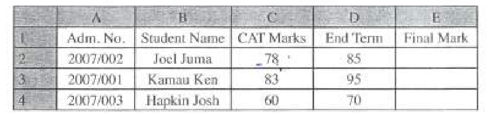
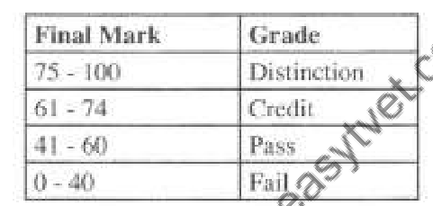

COMPUTER APPLICATIONS I (THEORY)
Exam Code: 2920/102A
Duration: 2 hours
Period: July 2017
State the function of each of the following features as used in word processing applications: (i) status bar; (ii) drop cap; (iii) ruler. Status bar: Displays information about the current state of the word processing document, such as page number, word count, and current editing mode. Drop cap: Creates a large initial capital letter at the beginning of a paragraph for stylistic effect. Ruler: Provides horizontal and vertical guides for setting margins, tabs, and indents in a document. Purity intends to purchase different software for her company and the following options are available. VisiCalc, Oracle, Lotus 1-2-3, FoxPro, Vp Planner, Lotus Approach, Ms Excel, Ms Access. Classify them as either spreadsheet or database software. Spreadsheet Software: VisiCalc Lotus 1-2-3 Vp Planner Ms Excel Database Software: Oracle FoxPro Lotus Approach Ms Access Judith intends to set different guides on a publication. Outline four guides that she could apply. Judith could apply the following four guides in her publication: Margin Guides: Define the outer boundaries of the printable area on each page, ensuring content is within set limits. Column Guides: Divide pages into vertical columns to structure text and elements in a multi-column layout. Ruler Guides: User-defined horizontal and vertical lines for precise alignment of text and graphic elements. Baseline Guides: Horizontal lines used to align the baseline of text across columns and pages for consistent typography. Distinguish between cookies and history as applied in Internet applications. Cookies: Cookies are small text files that websites store on a user's computer. They are used to remember information about the user, such as login details, site preferences, and shopping cart contents. Cookies enhance user experience by providing personalized and efficient browsing sessions. History: History, in the context of internet applications, is a record of web pages a user has visited. Browsing history logs URLs, timestamps, and sometimes cached content of visited sites. It allows users to easily revisit previously accessed web pages and provides a trail of browsing activity. Distinction: Cookies are for website-specific data storage to remember user preferences and session information, stored by websites on the user's machine. History is a browser-maintained list of visited web pages for user navigation and backtracking, stored by the browser. Define the term mail merge, give the three files to be created during this process. Mail Merge Definition: Mail merge is a word processing feature that combines a main document with a data source to create personalized documents for mass distribution. Three Files Created: Main Document: Contains the base text and formatting that remains the same in all output documents, including placeholders for variable data. Data Source File: Holds the variable information (e.g., names, addresses) organized in a structured format like a spreadsheet or database. Merged Documents: The final output documents, each personalized with data from the data source, generated by combining the main document and data source. Mariah intends to use format painter and conditional formatting features while editing a word processing document. Explain the function of each of the features. Format Painter: The format painter is a word processing tool that copies the formatting from one section of text or object and applies it to another. It allows users to quickly replicate styles such as font type, size, color, and paragraph settings, ensuring consistent formatting across a document. Conditional Formatting: Conditional formatting is a feature that applies specific formatting to cells in a spreadsheet or text in a document based on predefined rules or conditions. It automatically changes the appearance of data (e.g., font color, background) when it meets certain criteria, highlighting important information and making data analysis easier. Explain two ways in which an operating system achieves the function of enhancing computer security. Two ways an operating system enhances computer security are: User Authentication and Access Control: Operating systems implement user accounts with passwords and permissions. This system requires users to authenticate themselves before accessing the system and controls their level of access to files, applications, and system resources. By managing user identities and permissions, the OS prevents unauthorized access and protects system integrity. Firewall and Network Security: Modern operating systems include built-in firewalls that monitor and control network traffic. Firewalls block unauthorized network connections, protecting the system from external threats such as hacking and malware intrusion. They act as a barrier between the computer and external networks, filtering traffic based on security rules to prevent malicious access. Kited prefers using templates to generate company presentations. Outline two reasons for his preference. Two reasons Kited might prefer using templates for company presentations are: Time Efficiency: Templates provide pre-designed layouts and formatting, significantly reducing the time needed to create a presentation from scratch. Kited can quickly populate existing templates with content instead of designing each slide element, speeding up the presentation creation process. Consistent Design and Professionalism: Templates ensure a uniform and professional look across all slides. They maintain consistent fonts, color schemes, and layouts, enhancing visual coherence and brand identity. Using templates helps Kited create presentations that appear polished and professionally designed, reinforcing a positive company image. Define the term search engine giving two examples. Search Engine Definition: A search engine is a software system designed to carry out web searches, which means to search for information on the World Wide Web. The search results are generally presented in a line of results, often referred to as search engine results pages (SERPs). Two Examples: Google Search Bing Explain the reason that would necessitate a user to preview a word processing document before printing. Previewing a word processing document before printing is necessary to ensure the document will print as intended. It allows users to check the layout, formatting, and pagination of the document, verifying that elements like margins, headers, footers, and page breaks are correctly positioned. Previewing helps to catch and correct any errors or unwanted formatting issues before wasting paper and ink on a physical printout. With the aid of a sketch in each case, describe the following types of presentation views: (i) normal; (ii) slide sorter. (i) Normal View: Normal view is the primary editing view in presentation programs. It displays three main areas: the slide pane (showing the current slide for editing), the outline pane (displaying the text outline of the presentation), and the notes pane (for adding speaker notes). It is used for creating and editing individual slides, adding content, and structuring the presentation's flow. [Sketch: A box divided into three vertical sections. Left section: Outline pane with bullet points. Middle section: Slide pane showing a single slide. Right section: Notes pane with lines for text.] (ii) Slide Sorter View: Slide sorter view displays thumbnail versions of all slides in the presentation in a grid arrangement. This view is used to get an overview of the entire presentation, reorder slides by dragging and dropping, and manage the sequence of slides. It is ideal for rearranging and organizing the overall structure of the slideshow. [Sketch: A grid of small boxes, each representing a slide thumbnail, showing slide numbers and basic slide content overview. Arrows indicate dragging and dropping to reorder slides.] Fred wishes to understand the difference between soft return and hard return as used in word processing application. Explain to him the meaning of each of the terms. Soft Return (Line Break): A soft return, typically inserted by pressing Shift+Enter, starts a new line within the same paragraph. It moves the text cursor to the next line without initiating a new paragraph. Soft returns are used to break lines of text for visual formatting within a paragraph, such as in addresses or poems, while keeping the text as a single paragraph unit for formatting purposes. Hard Return (Paragraph Break): A hard return, inserted by pressing Enter, ends the current paragraph and starts a new one. It creates a paragraph break, separating text into distinct paragraphs. Hard returns are used to structure documents into paragraphs, each of which can be independently formatted (e.g., indentation, spacing). They signal the end of one block of text and the beginning of another in terms of document structure. Distinction: Soft return creates a new line within the same paragraph, for formatting within a text block. Hard return creates a new paragraph, structuring the document into distinct, independently formattable text blocks. Table 1 shows an extract of a worksheet with details of students' performance in a college. Use it to answer the questions that follow.  (i) Assuming the Final Mark comprise of 30% of the CAT Marks and 70% of the End Term Marks. Write a formula that would calculate the Final Mark for Joel Juma. Assuming CAT Marks are in cell C2 and End Term Marks are in cell D2 for Joel Juma, the formula to calculate the Final Mark in cell E2 is: This formula calculates 30% of the CAT Marks and 70% of the End Term Marks and sums them to get the Final Mark for Joel Juma. Assume that students are graded based on the criteria in Table 2.  Write a formula that would be used to grade Joel Juma. Assuming Joel Juma's Final Mark is calculated in cell E2, the formula to grade Joel Juma based on Table 2 criteria, placed in cell F2, is: This nested IF formula checks the Final Mark in cell E2 against the grading criteria in Table 2 and assigns the corresponding grade ("Distinction", "Credit", "Pass", or "Fail"). Define each of the following terms as used in DTP applications: (i) kerning: (ii) tracking; (iii) leading. Kerning: The adjustment of space between specific pairs of characters to improve readability and visual appeal. Tracking: Uniform adjustment of spacing between all characters in a block of text, affecting overall text density. Leading: The vertical space between lines of text, measured from baseline to baseline, influencing readability and text block density. Explain each of the following types of cell references as applied in spreadsheet programs: (i) relative; (ii) absolute. (i) Relative Cell Reference: A relative cell reference in a spreadsheet formula is based on the position relative to the cell containing the formula. When a formula with relative references is copied to another cell, the references adjust relative to the new cell's position. For example, if cell B2 contains `=A2+1`, and this formula is copied to B3, it will change to `=A3+1`, automatically adjusting to the new row. (ii) Absolute Cell Reference: An absolute cell reference is fixed and does not change when the formula is copied to another cell. Absolute references are denoted by dollar signs ($) before the column letter and row number (e.g., `$A$1`). If cell B2 contains `=$A$1+1` and is copied to B3, it will remain `=$A$1+1`, always referring to cell A1 regardless of where the formula is moved. (i) Define the term spam as applied in Internet applications. (ii) Describe the term contextual tab as used in word processing applications. (i) Spam Definition: Spam, in internet applications, refers to unsolicited and often unwanted digital communications, typically sent in bulk. It is commonly associated with unsolicited commercial email (UCE), but can also occur in instant messaging, social media, and other digital communication channels. Spam is generally used for advertising, phishing, spreading malware, or other malicious purposes. (ii) Contextual Tab Description: A contextual tab in word processing applications is a ribbon tab that appears only when a specific object or feature is selected or in use. These tabs provide tools and options that are relevant to the current context or selected item, such as formatting tools for images when an image is selected, or table design tools when a table is active. Contextual tabs streamline the user interface by showing only relevant commands when needed, reducing clutter and improving usability. Joel intends to design a master page for her presentation. List four elements that the page is likely to have. Four elements a master page in a presentation is likely to have are: Background Design: A consistent background style, color, or graphic that appears on all slides using this master. Headers and Footers: Elements like slide numbers, presentation titles, dates, or company logos that repeat at the top or bottom of each slide. Placeholders for Content: Designated areas for slide titles, text boxes, images, and other content that are consistently positioned on slides using the master. Font and Color Schemes: Predefined font styles and color palettes that set the visual theme for all slides associated with the master page. Explain each of the following features in database applications: (i) page footer; (ii) report footer. (i) Page Footer: A page footer in database reports is a section that appears at the bottom of every printed page of a report. It typically contains information that repeats on each page, such as page numbers, dates printed, report titles, or confidentiality notices. Page footers ensure consistent identification and context throughout multi-page printed reports. (ii) Report Footer: A report footer is a section that appears once at the very end of a database report, after all data records have been processed and displayed. It is used to provide summary information for the entire report, such as grand totals, averages, counts, or concluding remarks. Report footers summarize the overall data presented in the report and provide a concluding section. With the aid of an example, explain the term input mask as used in database applications. Input Mask Explanation: An input mask is a database feature that defines a template for data entry in a field, controlling the format and type of data that can be entered. It enforces data validation at the input stage by specifying required characters, optional characters, and the format in which data must be entered. Input masks help ensure data consistency and accuracy by guiding user input. Example: For a phone number field, an input mask like `(999) 000-0000` can be applied. Here, `9` represents a required digit and `0` represents a required digit (displayed as 0 if no digit is entered, but requires input). When a user enters a phone number, the input mask enforces the format of three digits in parentheses, followed by a space, then three digits, a hyphen, and four digits. This ensures all phone numbers are entered in a consistent format, like (123) 456-7890. Distinguish between linked object and embedded as applied in DTP applications. Linked Object: When an object (like an image or document) is linked in a DTP application, only a reference or pointer to the original file is stored in the DTP document. The actual object file remains separate. Changes made to the original linked file are reflected in the DTP document each time it is opened or updated. Linked objects keep DTP file sizes smaller and ensure that the document always displays the most current version of the object. Embedded Object: When an object is embedded in a DTP application, the entire object file becomes part of the DTP document itself. The DTP document contains a complete copy of the embedded object. Changes to the original object file do not affect the embedded copy in the DTP document, and vice versa. Embedded objects increase the DTP file size but make the document self-contained, as it does not rely on external files. Distinction: Linked objects maintain a connection to an external file, reflecting updates but requiring the external file to be accessible. Embedded objects become part of the DTP document, making it self-sufficient but not dynamically updated with changes to the original external file. Explain a circumstance that would necessitate a computer user to apply each of the following data types in a database application: (i) OLE object; (ii) memo; (i) OLE Object: A computer user would use the OLE Object data type in a database when they need to embed or link documents, spreadsheets, images, or other binary data created in other applications directly within database records. This is necessary when the database needs to store complex, non-textual data that is best managed by other software. For instance, embedding a Word document, an Excel chart, or a Photoshop image directly into a record for comprehensive data management and context. (ii) Memo: A computer user would use the Memo data type when they need to store large amounts of text in a database field, exceeding the limits of standard text or character data types. Memo fields are designed for lengthy, unstructured text such as notes, descriptions, comments, or detailed text passages. This is necessary for storing variable-length text data that can be extensive and does not fit into fixed-length text fields, like detailed product descriptions or customer feedback. State the function of each of the following features as applied in DTP applications: (i) watermark; (ii) crop; (i) Watermark Function: The watermark feature in DTP applications is used to overlay a semi-transparent image or text onto a document or image. Watermarks serve to indicate document status (e.g., "Draft", "Confidential"), protect copyright, or brand documents visually. They are typically faint enough not to obscure the main content but clearly visible for their intended purpose. (ii) Crop Function: The crop function in DTP applications is used to trim or cut away unwanted parts of an image or graphic. Cropping allows users to focus on a specific area of an image, remove distracting elements, or adjust image dimensions to fit a layout. It modifies the visible area of an image without altering the image resolution or underlying file. Joy recommended that her company should acquire a customized accounting package for their operations. Explain two reasons for her recommendation. Two reasons for Joy recommending a customized accounting package are: Specific Business Requirements: Customized accounting software can be tailored to meet the unique and specific accounting needs of her company. Off-the-shelf packages may not fully address industry-specific processes, reporting requirements, or workflows. Customization ensures that the software aligns precisely with the company's operational model, providing targeted functionality and efficiency. Scalability and Integration: A customized package can be designed to scale with the company's growth and integrate seamlessly with existing systems. As the company expands or changes its operational structure, customized software can be adapted and modified to accommodate these changes. Furthermore, it can be built to integrate smoothly with other business systems (e.g., CRM, inventory management), creating a unified and efficient data ecosystem, which might be challenging with generic software solutions. Distinguish between bound and unbound controls as used in database applications. Bound Controls: Bound controls in database applications are directly linked to a specific field in a data source (table or query). These controls are used to display and edit data from the linked field. Changes made in a bound control are directly updated in the underlying data source, and vice versa. Examples include text boxes, combo boxes, and checkboxes that display and manipulate database field values. Unbound Controls: Unbound controls are not connected to a data source field. They are used for interface elements that do not directly display or manipulate database data. Unbound controls provide user interface functionality, such as command buttons, labels, images, or navigation controls. They are used for actions like triggering events, displaying static text, or enhancing form appearance without direct data binding. Distinction: Bound controls are data-aware, displaying and interacting with data from a database field, creating a direct data link. Unbound controls are interface-centric, providing user interface functionality without direct connection to or manipulation of database data. Esther intends to proofread a document created in a word processing program. Explain two features that she could use to achieve her objective. Two features Esther could use to proofread a document in a word processing program are: Spell Check and Grammar Check: Word processing programs offer built-in spell check and grammar check tools. Spell check identifies and flags misspelled words, while grammar check reviews sentence structure, punctuation, and grammatical errors. Using these tools helps Esther automatically detect and correct common writing mistakes, improving the document's accuracy and readability. Read Aloud Feature: Many word processors have a "Read Aloud" or "Speak" feature that reads the document text aloud. Listening to the document being read can help Esther identify errors that might be missed when reading silently, such as awkward phrasing, sentence flow issues, or incorrect word usage. Hearing the text read aloud provides a different perspective and enhances proofreading effectiveness by engaging auditory senses.1. (a) (3 marks)
Answer
1. (b) (4 marks)
Answer
1. (c) (4 marks)
Answer
1. (d) (4 marks)
Answer
2. (a) (i) (3 marks)
Answer
2. (a) (ii) (3 marks)
Answer
2. (b) (4 marks)
Answer
2. (c) (2 marks)
Answer
2. (d) (3 marks)
Answer
3. (a) (2 marks)
Answer
3. (b) (4 marks)
Answer
3. (c) (4 marks)
Answer
3. (d) (i) (2 marks)
Answer
=(C2*0.3) + (D2*0.7)3. (d) (ii) (3 marks)
Answer
=IF(E2>=75,"Distinction",IF(E2>=61,"Credit",IF(E2>=41,"Pass","Fail")))4. (a) (3 marks)
Answer
4. (b) (4 marks)
Answer
4. (c) (4 marks)
Answer
4. (d) (4 marks)
Answer
5. (a) (4 marks)
Answer
5. (b) (3 marks)
Answer
5. (c) (4 marks)
Answer
5. (d) (4 marks)
Answer
6. (a) (3 marks)
Answer
6. (b) (4 marks)
Answer
6. (c) (4 marks)
Answer
6. (d) (4 marks)
Answer